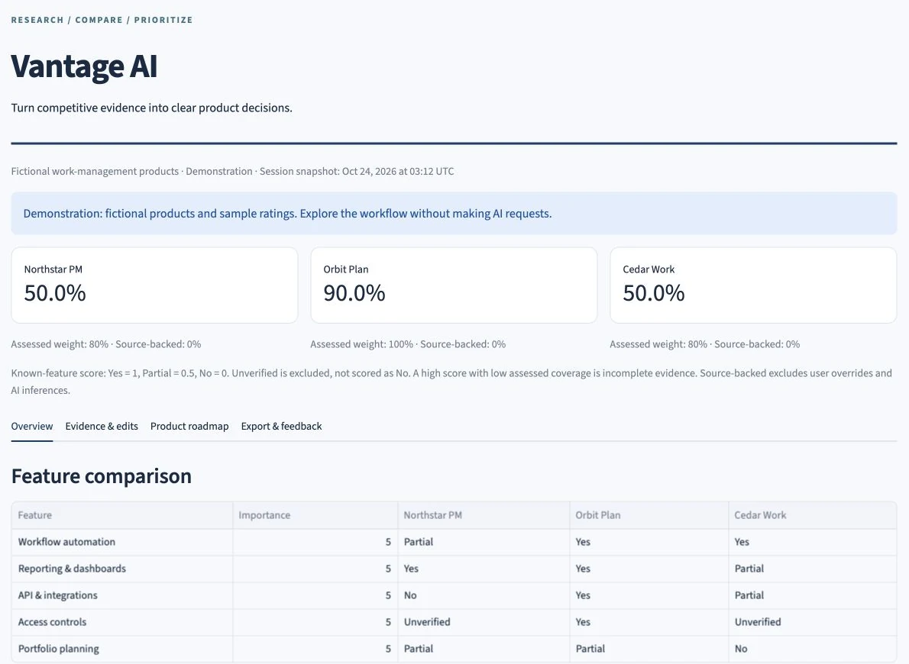
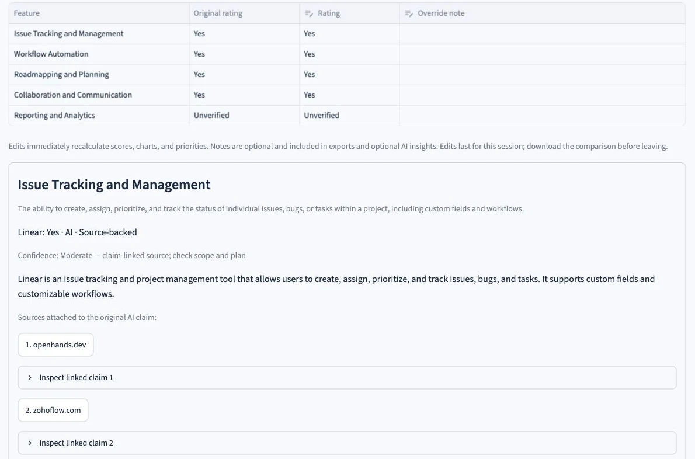
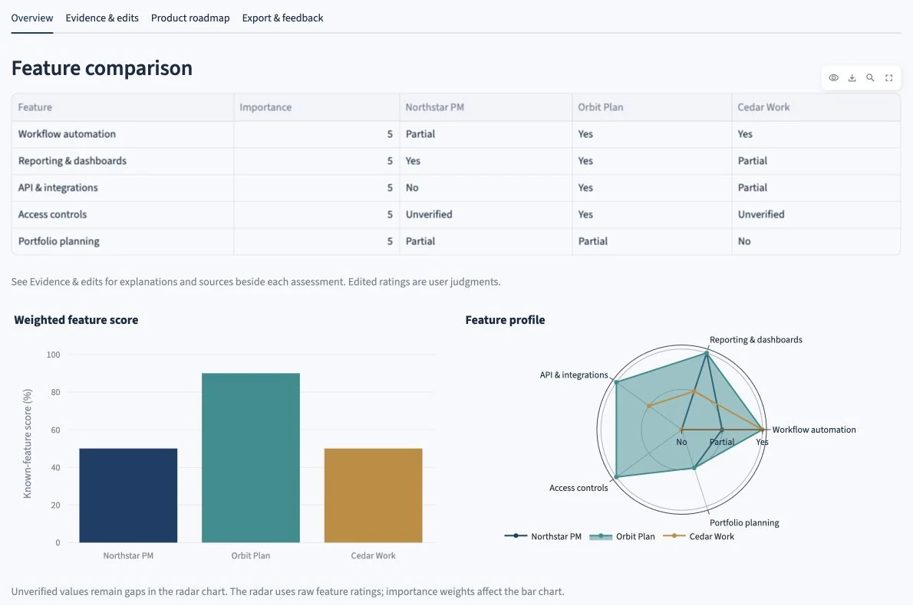
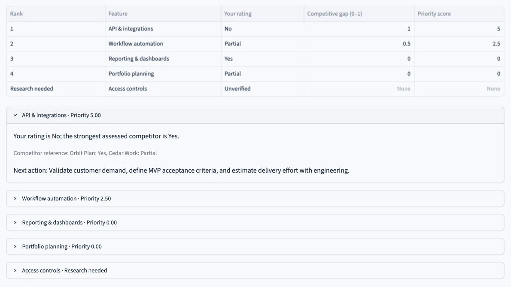

V1 / Initial release
Feature comparison
- Gemini-powered five-feature comparisons.
- Yes / No / Partial ratings.
- Adjustable weights and scores.
- Radar and bar charts.
- CSV exports and AI executive insights.
- A list of the largest feature gaps.
Product Management / AI Development
AI-powered competitive research
I built Vantage AI to research competitors, compare features, and prioritize product improvements.
Product Owner & DeveloperIndividual project · Publicly deployed
94 passing automated tests95% core module coverage

I first built Vantage AI to automate feature comparisons. I added citations, editable ratings, and roadmap priorities so users could review the research and choose what to investigate next.
Competitive research often means moving between product websites, spreadsheets, and presentations. Gathering information is only part of the work: someone still needs to check it, compare features consistently, and decide what matters.
Documentation, pricing, and feature pages describe different plans and product scopes.
AI-generated comparisons can look complete even when evidence is missing.
A competitor’s feature is not enough reason to build it.
I chose these priorities from my own workflow and implementation review, expecting fewer steps to a useful comparison. Intended users and goals remain untested.
Research competitors against five criteria.
Check sources and correct ratings.
Adjust weights and compare scores.
Estimate impact and effort.
Download the results and roadmap.
Gemini proposes five comparison criteria. Google Search grounding links sources to individual assessments where available, alongside explanations, dates, and qualitative confidence. Unsupported claims remain Unverified. Users can edit ratings and add notes while retaining the originals.

Adjustable importance weights drive the scores and bar chart; the radar chart shows feature profiles. Unverified ratings are excluded from the known-feature score. Evidence coverage and score bounds show how much remains unknown, and edits recalculate the results immediately.

Users estimate impact and effort to rank gaps. Each item includes an explanation and next action; missing evidence prompts further research. Comparison CSV, roadmap CSV, and executive PDF exports use the dashboard’s current calculations.
Priority = competitive gap × importance × impact ÷ effort
Gap compares your rating with the strongest assessed competitor. Importance ranges from 1–10; impact and effort are relative 1–5 estimates, not measured customer value or business returns.

I expanded the original comparison tool to address unsupported ratings, limited editing, an unranked gap list, and fragile result handling.
V1 / Initial release
V2 / Current release
Select a decision to read more.
≈85%
Self-recorded testing of the earlier V1 workflow; not an external user study or a V2 result.
94
Covering scoring, edits, sessions, evidence validation, exports, and API errors.
95%
Core modules only; this is test coverage, not whole-app coverage or research accuracy.
Release verification records these results, Python 3.11/3.12 checks, and live research/export checks. Automated tests mock external API calls.
Live research, source links, AI insights, and downloads were checked in the deployed app.
External usability, independent citation accuracy, repeat usage, and business impact. Linked sources still need review; engineering tests do not establish customer adoption.
Explore the demo or start a live comparison.